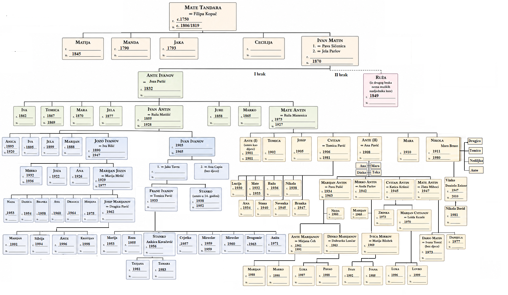

Matini potomci su među Tandarama prepoznatljivi po nadimku Cesarovići ili Sesarovići. Nadimak je odavna, a o njegovu nastanku živući Tandare ove rodoslovne grane plemena Tandara imaju sljedeću priču. Neki Matini potomci su radili poljoprivredne poslove kod nekoga iz roda Lažeta. Na upit ukućana i susjeda: Kakva vam je hrana bila u Lažeta?, odgovorili su: Ko' u cesara! Jesu li u svom odgovoru upotrijebili imenicu cesar ili sesar, ni Matini potomci nisu u tomu složni. Ovisno o upotrijebljenoj imenici, onaj prastari Tandara koji je to izgovorio dobio je nadimak Cesar, odnosno Sesar, a njegovi potomci su postali Cesarovići, odnosno Sesarovići.
Na nadgrobnim spomenicima postoji jedan i drugi nadimak. U mladosti sam čuo samo nadimak Sesarovići. No, većina živućih Matinih potomaka govori o sebi kao o Cesarovićima. Pa neka tako bude.
Ni za Matu nisam pronašao zapis koji bi nedvosmisleno potvrdio da je on sin Ivana Tandarića koji je 1725. dobio kuću i zemlju u Ričicama. Najstarija Matična knjiga umrlih župe Ričice za godine 1787.–1827., u kojoj bi se taj dokaz mogao pronaći, nažalost je većim dijelom uništena, tako da sam u njoj pronašao zapise o smrti samo troje čeljadi iz roda Tandara. No, Mate je nedvojbeno sin Ivana Tandarića, jer je u to vrijeme u Ričicama bila samo jedna obitelj toga roda, i to Ivanova.
Mate je rođen oko 1750., a umro između 1806. i 1819. U Stanju duša (Tablica 4-4 na stranici 23), Mate je glava šesteročlane obitelji. Njegova žena Filipa nije više bila živa.
Mate je bio oženjen Filipom Kopač. Imali su sina Ivana, te kćeri Matiju, Mandu, Jaku i Ceciliju.
Ivan Matin ženio se dvaput. Prvi put se ženio 1817. Pavom Sičenica i s njom imao sina Antu.
Ante se 1853. vjenčao s Jozom Pušić. Imali su sinove Ivana, Juru, Marka i Matu, te kćeri Ivu, Tomicu, Maru i Jelu. Za Juru i Marka nisam našao drugih zapisa osim onih o njihovom rođenju. Ili su umrli mladi, ili su se nekamo odselili.
Oženio se Ružom Matišić i s njom imao sinove Marijana, Jozu i Ivana, te kćeri Anicu, Ivu i Jelu. Za Marijana nisam našao drugih zapisa osim onog o njegovu rođenju. Ili je umro mlad, ili se nekamo odselio.
Jozo, drugi Ivanov sin, uzeo je za ženu Ivu Bilić. Imali su sinove Marijana i Mirka (koji je umro kao malo dijete), te kćeri Jozu i Anu.
Marijan Jozin oženio se Matijom Mršić i s njom dobio sina Josipa, te kćeri Nadu, Danicu, Branku, Anu, Dragicu i Mirjanu. Josip je uzeo za ženu Dragicu Pavić. Imaju sinove Marijana, Antu i Kristijana, te kćeri Silviju.
Rođ. Matišić, ženio se dvaput. Prvi put se oženio Jakom Tavra i s njom dobio sinove Franu i Stanka, koji je umro u dobi od četrnaest godina.
Frane Ivanov uzeo je za ženu Tomicu Pavić i s njom dobio sinove Stanka, Cvjetka, Miroslava (koji je umro kao malo dijete) i Dragomira, te kćeri Mariju, Rozu, Miroslavu i Anitu. Stanko je u braku s Ankicom Kovačević. Imaju kćeri Tatjanu i Tamaru. Žive u Zagrebu. Cvjetko i Dragomir nisu se ženili. Žive u Klokočevcu kod Bjelovara.
Oženio se Ružom Manenica. Imali su sinove Antu (koji je umro kao malo dijete), Josipa, Cvitana, Antu (ponovo) i Nikolu, te kćeri Tomicu i Maru. Za Josipa nisam našao drugih zapisa osim onog o njegovu rođenju. Ili je umro mlad, ili se nekamo odselio.
Cvitan, treći Matin sin, uzeo je za ženu Tomicu Pavić. Imali su sinove Matu (koji je umro kao malo dijete) i Nikolu, te kćeri Luciju, Anu, Ružu, Stanu, Nevenku i Branku. Za Nikolu nisam našao drugih zapisa osim onog o njegovu rođenju. Ili je umro mlad, ili se nekamo odselio.
Oženio se Anom Pavić. Dobili su sinove Marijana, Dinka (koji je umro kao malo dijete), Mirka, Matu i Cvitana, te kćeri Anu, Maru i Tonku.
Uzeo je za ženu Pavu Pušić. Odgojili su sinove Antu i Dinka, te kćer Nedu. Marijan je 1963. poginuo u Njemačkoj.
Ante Marijanov (Slika 5-8) rođen je 1961. u Ričicama. S majkom Pavom, sestrom Nedom i bratom Dinkom od 1964. živio je u selu Klokočevac kod Bjelovara. Oženio se Mirjanom Čeh i s njom dobio sinove Marijana i Marka. Početkom devedesetih godina, kao i većina hrvatskih domoljuba, uključuje se u obranu Hrvatske od agresije bivše Jugoslavenske narodne armije i srpskih paravojnih skupina.
U Domovinskom ratu Ante sudjeluje od kolovoza 1991. kao pripadnik 105. brigade HV-a. U rujnu iste godine Ante i devetnaest drugih hrvatskih branitelja, većinom iz Bjelovara, bivaju zarobljeni u Kusonjama kod Pakraca, mučeni i zvjerski pogubljeni. Njihovi posmrtni ostaci izvađeni su iz masovne grobnice Rakov Potok u siječnju 1992.
Antini posmrtni ostaci pokopani su 5. veljače 1992. na bjelovarskom groblju. Vječna mu slava i hvala za njegov doprinos u stvaranju Republike Hrvatske. Počivao u miru Božjem.
Slika 5-8: Ante Tandara Marijanov
Uzeo je za ženu Dubravku Lončar. Imaju sinove Luku i Pavla. Žive u Zagrebu.
Oženio se Anđom Parlov i s njom dobio sinove Marijana i Ivicu. Marijan se nije ženio. Mirko, Anđa i Marijan žive u Splitu.
Vjenčao se s Matijom Bilobrk. Imaju sina Ivana i kćer Ivanu. Žive u SAD-u.
Uzeo je za ženu Katicu Kršinić. Imaju sina Marijana i kćer Zrinku. Marijan se oženio Leidom Kezele i s njom dobio sinove Luku i Lovru. Cvitanova obitelj živi u Splitu.
Uzeo je za ženu Zlatu Mihoci. Odgojili su sina Daria i kćer Danijelu. Dario se oženio Ivanom Tomić. Nemaju djece.
Oženio se drugi put Jelom Parlov. Imali su kćer Ružu.
Grafički prikaz Matina rodoslovlja donosimo na stranicama 77–81.
